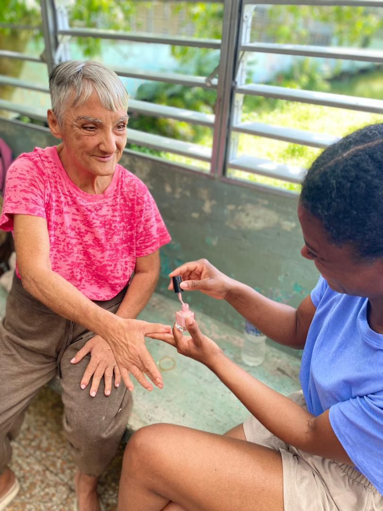

Historia de Impacto
Impact Story
Historia Viva
Living History
2024
Sembrando el Fuego
Planting the Fire
80 pastores · 500+ familias · 30K lbs
80 pastors · 500+ families · 30K lbs
2025
Resiliencia y Expansión
Resilience & Expansion
50K+ alimentados · 33 iglesias nuevas
50K+ fed · 33 new churches

80
Pastores
Pastors
500+
Familias
Families
30K
Lbs arroz
Lbs rice
400+
Ofrendas
Offerings
Alcance Nacional
National Reach
80 pastores80 pastors10 misioneros10 missionaries
Necesidades Físicas
Physical Needs
500+ familias500+ families30K lbs30K lbs
Plantando Iglesias
Church Planting
20+ iglesias20+ churches
"Cuba es un tesoro escondido, ahora descubierto por la mano de Dios."
"Cuba is a hidden treasure, now uncovered by the hand of God."

50K+
Alimentados
Fed
33
Iglesias
Churches
300
Estudiantes
Students
30K+
Líderes
Leaders
Alcance Nacional
National Reach
30K+ líderes30K+ leaders40+ conferencias40+ conferences
Plantando la Iglesia
Building the Church
33 iglesias33 churchesCentro ApostólicoApostolic Center
Nueva Generación
New Generation
2,700 jóvenes2,700 youth300 universidad300 university
"La Iglesia en Cuba crece y florece. ¡Veré a Cuba libre!"
"The church in Cuba is growing. I will see Cuba free!"